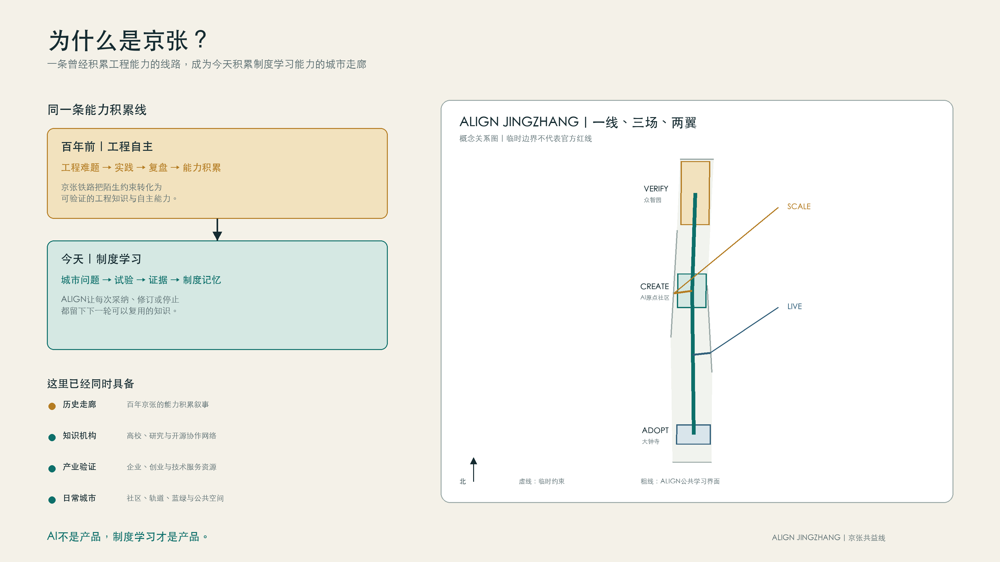
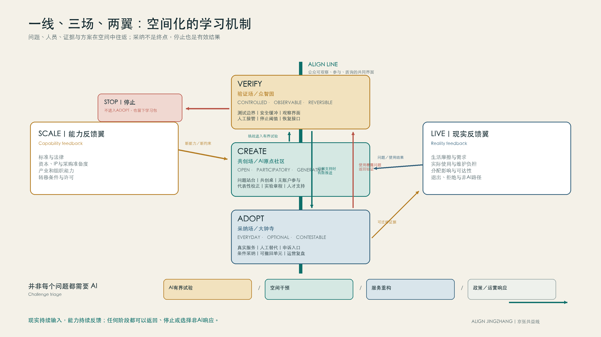
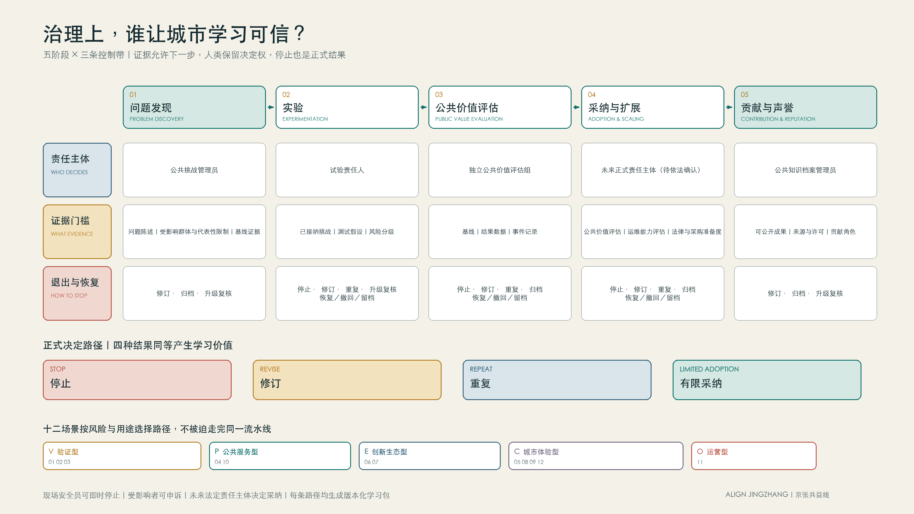
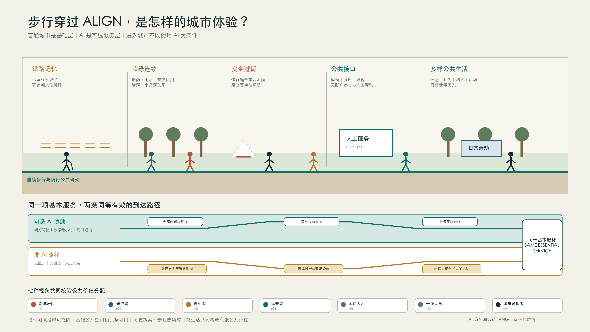
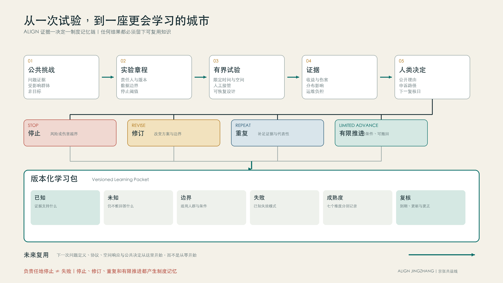

01 · 意义
为什么是京张

历史工程能力与当代制度学习能力在同一走廊相遇。
AI 不是城市的中心，而是制度学习的加速器。ALIGN 让居民、研究者、创业者、企业、大学、运营者与公共部门通过有界试验、公共价值评估、可撤回采纳和版本化学习共同进步。
五张图构成完整阅读路径。这里只回答方案是什么，不让技术实现压过设计思想。

历史工程能力与当代制度学习能力在同一走廊相遇。

一线、三场、两翼是反馈系统，而非功能标签。

证据门与人类决定权控制推进、停止和恢复。

普通城市是基础层，AI 是可选服务层。

每一种结果都留下版本化学习包。
AI 不是产品，制度学习才是产品。
负责任地停止，与成功部署同样有价值。
进入城市，不以使用 AI 为条件。
ALIGN LINE 连接公众；VERIFY、CREATE、ADOPT 承担不同制度任务；SCALE 提供能力反馈，LIVE 提供现实反馈。
把生活中的摩擦转化为有证据、有代表性边界、有公共责任人的挑战，而不是由技术供应方单方面制造需求。
责任：公共挑战管理员通过时间、空间、数据与责任均受约束的测试章程验证假设，并在造成不可接受影响前停止或回滚。
责任：试验责任人同时比较效果、分配、公平、尊严、隐私、安全、环境与运维负担，公开收益与代价而不是压缩成单一分数。
责任：独立公共价值评估组把采纳视为新的公共决定，要求责任主体、运维能力、申诉渠道、退出预算和复审日期齐备，而不是把试点成功等同于规模化。
责任：未来正式责任主体（待依法确认）把可复用证据、失败、限制与署名沉淀为公共知识；声誉必须可纠正、可申诉、有时效且不得替代采购或公共决策。
责任：公共知识档案管理员五个模块展开空间、治理、生活、实验和记忆。场景、人物与试验记录默认收起，按需阅读。
百年前积累工程自主能力；今天积累制度学习能力。高校、产业验证、社区生活与铁路遗产在同一走廊中形成罕见的反馈密度。
问题、人员、证据与解决方案可以推进、返回、停止，或转向空间干预、服务重构和政策运营响应。
五阶段由责任主体、证据门槛、退出与恢复三条控制带约束。采纳不是模型自动输出，而是可申诉的人类决定。
铁路记忆、蓝绿连续、安全过街、公共接口和多样活动构成基础城市；AI 与非 AI 路径均抵达同一基本服务。
每次试验都生成可复用、可到期、可更正的学习包；未来实验不必从零开始。
问题多智能体在城市公共任务中的协作结果难以复现，失败责任、版本和工具调用边界不清。
AI 能力多智能体任务分解、协作与可复现实验记录
人工复核独立评测者与领域专业人员；任何专业或公共决定均由人类作出，基准分数不产生部署资格
隐私边界只使用公开或合成的最小任务集
失败条件结果无法复现；智能体绕过工具权限；人工复核无法解释关键步骤
退出策略冻结有问题的基准版本，保留可审计记录并迁移到开放格式。
问题不同机器人的让行、遥停、弱势行人识别和事故恢复能力缺少可比较的共同空间测试。
AI 能力低速感知、路径规划、让行与远程接管
人工复核现场安全员与独立无障碍观察员；现场安全员拥有即时停机权，行人始终拥有优先权
隐私边界现场感知优先端侧处理，只保留事件必要片段
失败条件触发碰撞或近失阈值；遥停失败；无障碍通行被持续阻断
退出策略停运并撤除临时设施，删除非必要感知记录，公开故障与恢复报告。
问题城市AI产品常在试点后才补做隐私控制，目的、最小化、留存和退出难以在部署前验证。
AI 能力隐私威胁建模、数据流检查、合成数据与最小化测试
人工复核隐私、法律与安全专业人员；工具只提出风险线索，合规结论由有资质的人类责任主体另行作出
隐私边界默认使用合成数据和字段级替代
失败条件无法说明处理目的；删除不可验证；高风险字段无必要性证据
退出策略归档测试方法，销毁临时数据，撤回存在误导的通过标记。
问题初到海淀的人才面临多语言、跨机构和信息时效问题，容易依赖来源不明的建议。
AI 能力多语言检索、权威来源引用与人工服务转接
人工复核人才服务人员；用户可随时选择人工服务，AI不得替代正式办事窗口
隐私边界匿名浏览优先，个案资料只在正式责任主体渠道处理
失败条件未引用权威来源；过期信息未标记；高影响建议未转人工
退出策略关闭AI入口时保留同等可达的人工和静态指南。
问题早期团队难以区分问题验证、技术测试、合规准备和现实采购，容易把试点当作政府或市场背书。
AI 能力结构化挑战、实验、证据和转移文档的生成辅助
人工复核创业导师、法律与行业专业人员；AI输出不构成法律、投资、采购或政策意见
隐私边界团队自行控制材料，敏感信息不得进入公共模型
失败条件把试点写成官方背书；缺少退出责任；来源不可追溯
退出策略保留开放模板和导出数据，避免平台锁定。
问题企业面对标准、测试、人才和专业服务时信息分散，且推荐机制可能偏向特定供应商。
AI 能力基于公开目录的需求分解、来源引用和中立转接
人工复核企业服务人员；推荐不得替代专业意见，服务目录须披露排序规则与利益冲突
隐私边界仅处理完成需求分流所必需的信息
失败条件存在未披露商业偏向；过期信息造成重大误导；无法人工复核
退出策略提供完整目录导出和静态服务清单。
问题铁路历史、中关村创新史和AI新文化容易被压缩成科技装饰，事实、版权和多元叙事缺少来源。
AI 能力带来源的多语言讲解、路线适配和公众补充线索整理
人工复核历史、文保与版权专业人员；未经专业复核的生成内容不得作为正式历史说明
隐私边界不以个体追踪换取个性化
失败条件史实无来源；版权状态不清；把生成叙事冒充官方解释
退出策略保留经过复核的静态导览与来源索引。
问题慢行评价常依赖平均网络指标，遮阴、等待、台阶、施工和夜间感受等实际摩擦难以进入更新优先级。
AI 能力聚合现场审计、匿名反馈与路线网络，发现需要人工复核的摩擦点
人工复核交通、无障碍与公共空间专业人员；AI只提供调查线索，不给出道路、桥隧或工程可行性结论
隐私边界接受点位事件而非完整路线历史
失败条件高频人群压倒弱势需求；问题点未现场核验；输出被误作工程结论
退出策略归档聚合问题库并删除不再必要的原始反馈。
问题居民难以判断应联系哪个服务渠道，一线人员又可能被重复咨询淹没，但自动化容易造成责任推诿。
AI 能力低风险信息分流、表单解释与人工服务预约
人工复核社区一线工作人员；居民始终可跳过AI直接联系人工，AI不得作出资格或权益决定
隐私边界匿名信息查询优先，敏感事项直接转人工
失败条件权益事项被自动决定；人工渠道被削弱；错误无法更正
退出策略保留电话、现场和静态指南，不使基本服务依赖模型。
问题建筑能耗、设备和舒适度告警分散，自动优化可能把节能压力转嫁给使用者或一线人员。
AI 能力设备异常检测、维护建议与能耗趋势解释
人工复核设施工程师与使用者代表；关键设备与影响人员舒适安全的调整须由人类确认并可手动恢复
隐私边界优先使用设备和区域级数据
失败条件关键控制未经确认；节能收益以舒适或安全为代价；人工恢复失败
退出策略关闭模型后保持传统楼宇控制和人工维护能力。
问题公共活动可能集中于高流量和商业吸引力，忽略日常使用、安静需求、无障碍和场地恢复。
AI 能力基于公开规则的活动冲突检查、时段建议与影响模拟
人工复核公共空间运营人员与社区代表；活动许可、安全和公共资源分配均由人类及法定程序决定
隐私边界使用时段、场地和聚合承载信息
失败条件商业活动挤占基本公共使用；无障碍安排缺失；活动后场地未恢复
退出策略停用系统时保留公开日历、人工申请与冲突协调。
目标独立安全到达服务点；随时找到人工帮助
摩擦复杂界面；路线变化；数字账户门槛
风险暴露错误导航；数字排斥；过度采集
可达需求大字与语音；无障碍连续路径；非AI人工通道
目标复现实验；获得可信基准；公开限制
摩擦数据不可追溯；评测口径不一致
风险暴露成果归属争议；基准被操纵
可达需求开放接口；清晰许可
目标低成本验证问题价值；获得可迁移证据
摩擦试点规则不透明；采购与部署被混为一谈
风险暴露试点依赖；知识产权不清
可达需求测试章程模板；公平准入
目标评估运维负担；保障服务连续性
摩擦缺少事故与退出数据；供应商锁定
风险暴露服务中断；责任不清；锁定成本
可达需求服务等级；退出与迁移文档
目标理解办事路径；建立本地专业网络
摩擦语言与政策语境；信息碎片化
风险暴露错误建议；身份信息泄露
可达需求多语言；权威来源标识；人工升级
目标减少重复劳动；保留现场判断权
摩擦告警过载；责任转嫁；培训不足
风险暴露自动化偏误；工作负担转移
可达需求清晰升级规则；暂停权限；培训与反馈
目标保护公共利益；获得可复核证据
摩擦技术不透明；跨部门权责碎片化
风险暴露错误背书；不可逆承诺
可达需求证据链；利益冲突披露；停止与申诉机制
空间宿主verify
最长周期45 天
停止条件智能体绕过权限边界；关键输出不可解释或重复失败；数据或许可来源存在问题
恢复责任基准维护责任人：关闭测试访问；撤回误导性排名；删除不应保留的日志
空间宿主verify + live
最长周期30 天
停止条件严重碰撞或近失；遥停或人工接管失败；无障碍通行持续阻断；测试标识或绕行失效
恢复责任测试场责任主体：立即停运并撤除临时设施；恢复原通行状态；删除非必要感知数据；公开事故与恢复摘要
空间宿主verify + scale
最长周期21 天
停止条件发现真实个人信息进入测试；删除无法验证；处理目的无法说明；安全日志可能泄露敏感信息
恢复责任测试责任主体：隔离并删除异常数据；撤回误导性通过标记；记录控制缺口和修订要求
专业评委可检查来源、指标、几何状态、假设、试验、决定和学习包。此层不把 provisional 几何伪装成法定成果。
sqm · known · confidence high
polygon_area(submitted_site_boundary)来源：geometry/site_boundary.geojsonratio · known · confidence medium
green_space_area_sqm / site_area_sqm来源：geometry/green_space.geojson；geometry/site_boundary.geojsonratio · known · confidence medium
public_space_area_sqm / site_area_sqm来源：geometry/public_space.geojson；geometry/site_boundary.geojsonmetric-reproducibilityratio · proposed · 须实测metric-human-override-successratio · proposed · 须实测metric-remote-stop-latencymilliseconds · proposed · 须实测metric-accessibility-incidentscount_per_hour · proposed · 须实测metric-data-minimizationratio · proposed · 须实测metric-deletion-verificationratio · proposed · 须实测metric-learning-packet-publicationratio · proposed · 须实测metric-knowledge-reuseratio · proposed · 须实测metric-restoration-completionratio · proposed · 须实测metric-safe-learning-yielddashboard_not_composite_score · proposed · 须实测metric-accessible-programmingscenario-defined · 须在专业深化中补充公式与基线｜用于：公共空间活动共调度metric-audit-verificationscenario-defined · 须在专业深化中补充公式与基线｜用于：步行摩擦共测metric-charter-completenessscenario-defined · 须在专业深化中补充公式与基线｜用于：创业验证路径助手metric-citation-coveragescenario-defined · 须在专业深化中补充公式与基线｜用于：三种文化可追溯导览metric-comfort-distributionscenario-defined · 须在专业深化中补充公式与基线｜用于：建筑运维异常协作metric-correction-responsescenario-defined · 须在专业深化中补充公式与基线｜用于：三种文化可追溯导览metric-distribution-coveragescenario-defined · 须在专业深化中补充公式与基线｜用于：步行摩擦共测metric-first-contact-resolutionscenario-defined · 须在专业深化中补充公式与基线｜用于：社区事务人工优先助手metric-friction-resolutionscenario-defined · 须在专业深化中补充公式与基线｜用于：步行摩擦共测metric-human-handoffscenario-defined · 须在专业深化中补充公式与基线｜用于：国际人才到达协作助手；社区事务人工优先助手metric-language-accessscenario-defined · 须在专业深化中补充公式与基线｜用于：国际人才到达协作助手；三种文化可追溯导览metric-maintenance-responsescenario-defined · 须在专业深化中补充公式与基线｜用于：建筑运维异常协作metric-manual-restorescenario-defined · 须在专业深化中补充公式与基线｜用于：建筑运维异常协作metric-neutral-routingscenario-defined · 须在专业深化中补充公式与基线｜用于：企业服务证据导航metric-non-ai-accessscenario-defined · 须在专业深化中补充公式与基线｜用于：社区事务人工优先助手metric-pilot-claim-accuracyscenario-defined · 须在专业深化中补充公式与基线｜用于：创业验证路径助手metric-purpose-drift-findingsscenario-defined · 须在专业深化中补充公式与基线｜用于：隐私设计前置测试metric-rest-point-accessscenario-defined · 须在专业深化中补充公式与基线｜用于：老年友好分段导航metric-restoration-compliancescenario-defined · 须在专业深化中补充公式与基线｜用于：公共空间活动共调度metric-route-completionscenario-defined · 须在专业深化中补充公式与基线｜用于：老年友好分段导航metric-service-resolutionscenario-defined · 须在专业深化中补充公式与基线｜用于：企业服务证据导航metric-source-traceabilityscenario-defined · 须在专业深化中补充公式与基线｜用于：国际人才到达协作助手；企业服务证据导航metric-transfer-readinessscenario-defined · 须在专业深化中补充公式与基线｜用于：创业验证路径助手metric-use-diversityscenario-defined · 须在专业深化中补充公式与基线｜用于：公共空间活动共调度metric-yield-compliancescenario-defined · 须在专业深化中补充公式与基线｜用于：低速机器人共同空间验证geometry/site_boundary.geojsonkey_areas · land_use · buildings · urban_renewalroads · transit · green_space · public_space · scenario_nodesgeometry/scenario_nodes.geojsongeometry/scenario_nodes.geojsongeometry/scenario_nodes.geojsongeometry/scenario_nodes.geojsongeometry/scenario_nodes.geojsongeometry/scenario_nodes.geojsongeometry/scenario_nodes.geojsongeometry/scenario_nodes.geojsongeometry/scenario_nodes.geojsongeometry/scenario_nodes.geojsongeometry/scenario_nodes.geojsongeometry/scenario_nodes.geojsonDetailed regulatory controls, road redlines, ownership, municipal utilities, and engineering constraints must be confirmed from official attachments before statutory use.
pending_professional_confirmation｜The package can be reviewed as a formal AI submission only for provided official boundaries and submitted design layers; statutory controls still need professional confirmation.official_publicrepository_public_registryrepository_processed_referenceagent_inferred_from_public_dataagent_inferred_from_public_dataofficial_publicuser_provided_cleared